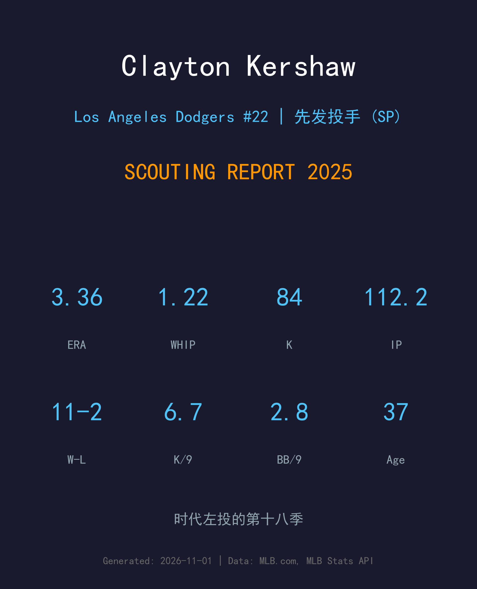
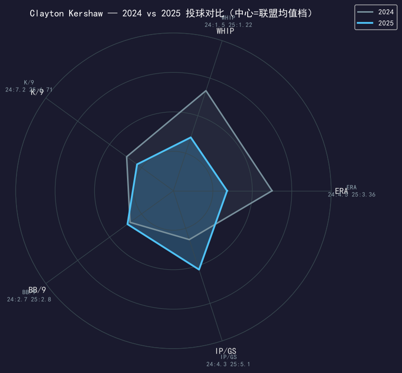
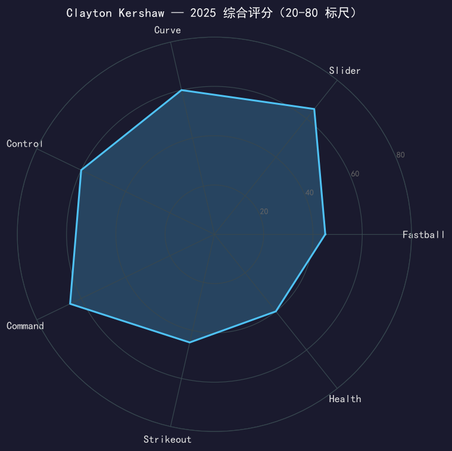

Los Angeles Dodgers #22 | 先发投手 | 左投 | 时代左投的第十八季

Clayton Kershaw 是三届赛扬奖得主（2011/2013/2014）、2014年国联MVP，道奇队史最伟大的投手，没有之一。
2025 年——他的第 18 个大联盟赛季——他投出了 23 场先发、11 胜 2 负、3.36 自责分率、1.22 WHIP 的成绩单。对比 2024 年因伤仅 7 场的阴霾，这是一季教科书式的老将回归。他的速球均速只剩 89 mph，但滑球使用率在 2025 年首次超过四缝线速球（41.4% vs 34.6%）——用配球智慧而不是球速在赢球。
赛季结束后他的合同到期，37 岁的去留与退役问题再次成为道奇球迷最关心的悬念。无论最终决定如何，2025 年的他已经证明：油箱里还有油。
2014 年更是以 21-3、1.77 ERA 的统治级表现包揽赛扬奖与国联MVP——投手最高荣誉的大满贯。
等了 12 年的冠军戒指。该年世界大赛他两次登板拿下关键胜投，终于摘掉「季后赛不行」的标签。
道奇队史三振王、投手 WAR 第一人；生涯三振超过 2900 次，是现役最接近 3000K 里程碑的投手。
从 2024 年的伤病深渊爬回，11 胜 2 负、3.36 ERA，证明自己仍能在大联盟轮值中占有一席之地。

| 赛季 | G | GS | W-L | ERA | WHIP | IP | SO | BB | K/9 |
|---|---|---|---|---|---|---|---|---|---|
| 2024 | 7 | 7 | 2-2 | 4.50 | 1.50 | 30.0 | 24 | 9 | 7.20 |
| 2025 | 23 | 22 | 11-2 | 3.36 | 1.22 | 112.2 | 84 | 35 | 6.71 |
从 30 局的伤病赛季到 112.2 局的 11 胜老将：ERA 降 1.14、WHIP 降 0.28，每局用球效率明显优化。唯一回落的是 K/9（7.20→6.71）——三振不再是他的主要武器，诱导软弱击球与控球挤压才是。
2025 赛季真实配球数据（MLB Stats API pitchArsenal）：
职业生涯首次成为第一球种。横向位移锐利、进垒点刁钻，是他面对右打者的必杀武器，也承担了大量两好球后的追杀任务。
球速已回不到 90+ 的年代，但靠出手隐藏性与上旋效率仍在好球带上半部抢下大量好球数，为滑球铺垫。
招牌大曲球，12-6 下坠幅度依旧可观。转速下降后更多作为配球节奏武器而非夺三振主力，但对左打者依旧致命。
近年新增的第四球种，用于对付右打者、弥补速球球速下滑后的速差缺口，进垒稳定性仍在打磨。
Kershaw 2025 年的成功是「老年投手教科书」：当速球均速跌破 90 mph，他把滑球占比推到生涯最高的 41.4%，用 displacement 而非 velocity 制造挥空与软击。1.22 的 WHIP 与 2.80 的 BB/9 说明他依旧能把球精准地丢到想要的位置——Command 是他最后的王牌。
6.71 的 K/9 是生涯最低档，84 次三振在 112.2 局中只排轮值后段。他不再追求三振，而是用 0.64 的 HR/9 与滚地球诱导把伤害降到最低。8 支全垒打被击出、每九局不到一支——在如今的棒球环境里这个数据堪称奢侈。
11 胜 2 负、胜率 84.6%，是国联胜率最高的先发之一。更重要的是他重新扛住了轮值量：22 场先发、场均 5.1 局，是山本由伸之外最可靠的轮值支柱。考虑到 2024 年他只有 7 场先发、带着肩部与大脚趾手术后的身体归来，这季的每一局都是老将意志力的证明。

用配球智慧延续生涯的传奇左投
B 级 / 轮值老将
道奇 2025 季后赛夺冠之路：外卡 2-0 红人 → NLDS 3-1 费城人 → NLCS 4-0 酿酒人 → 世界大赛 4-3 多伦多蓝鸟。
| G | GS | IP | ERA | WHIP | SO | BB | HR |
|---|---|---|---|---|---|---|---|
| 2 | 0 | 2.1 | 15.43 | 3.86 | 0 | 3 | 2 |
Clayton Kershaw 的合同在 2025 赛季结束后到期，37 岁的他站在职业生涯的十字路口：再战一季追逐 3000K（目前只差约 60 次），还是就此挂靴。从 2025 年的表现看，他仍具备大联盟轮值水平，但「还能投」和「还值得一个轮值位」之间的距离，正在逐年缩小。道奇球迷能确定的是：无论他如何选择，道奇体育场的 22 号迟早会挂上屋顶。
若续投：定位第 4-5 号先发 + 轮值导师，局数上限 120 局左右
里程碑：3000K 只差临门一脚，是续投最强动机
退役后：大概率进入道奇制服组或转播席，22 号退役球衣只是时间问题
Clayton Kershaw 出生于德州达拉斯，高中时期就是全美瞩目的左投天才。2006 年选秀大会上，道奇在第一轮第 7 顺位将他带回洛杉矶——这一选，选出了道奇队史最伟大的投手。
2010 年代是他的王朝：三座赛扬奖、一座 MVP、连续七届全明星。他的曲球被打出无数「Kershaw 式挥空」，而 2017 年世界大赛的失利与连年季后赛伤病，曾让「季后赛 Kershaw」成为他最不想听到的标签——直到 2020 年，他亲手撕掉了它。
场外的 Kershaw 以慈善闻名：他与妻子 Ellen 共同创立的「Kershaw's Challenge」基金会，长期资助非洲儿童与洛杉矶弱势群体。无论最后一季何时到来，他的 22 号早已不属于球场，而是属于道奇的传奇殿堂。